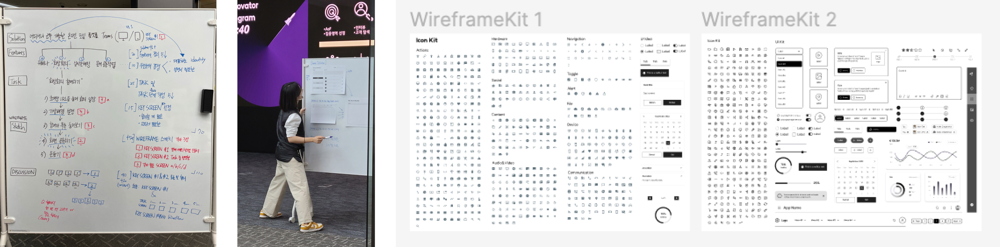
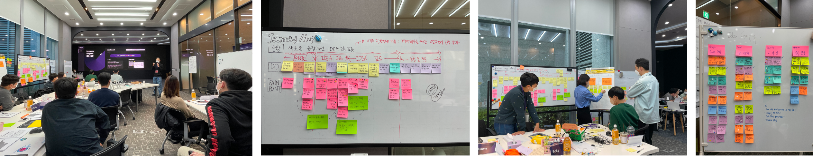
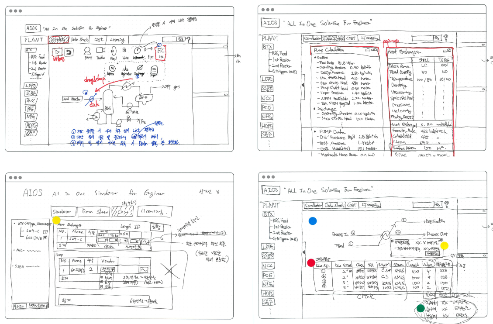
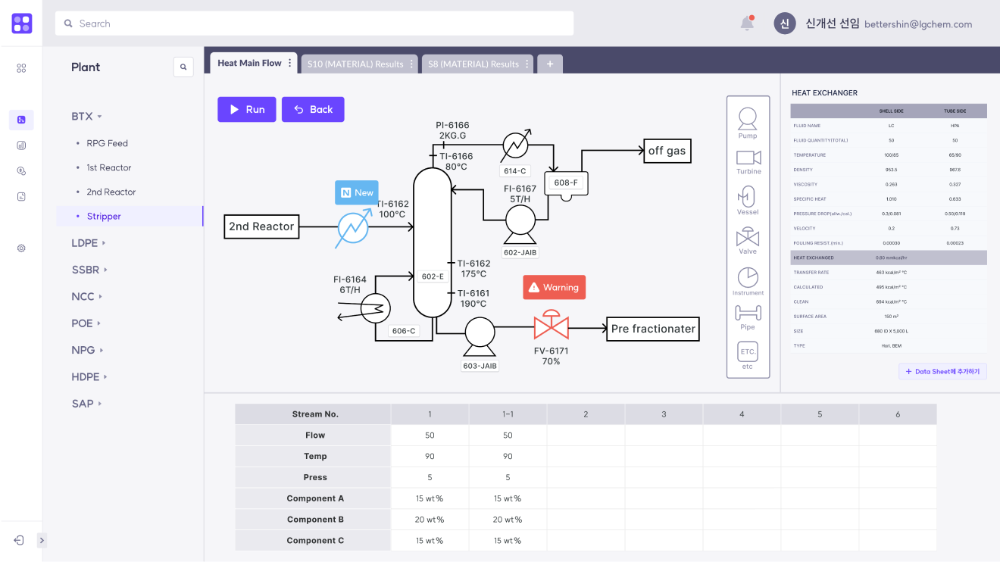
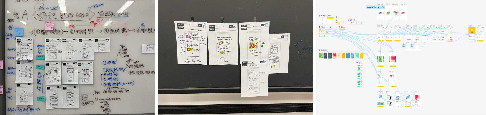

After joining LG CNS, I spent 12 months as a UX Subject Matter Expert (SME) in the Innovation Studio, a
division dedicated to discovering and developing digital transformation services. During this time, I
participated in six workshops across the logistics, metaverse, and finance sectors. I guided participants in
transforming their ideas into user-centric solutions, ensuring the developed concepts were practical,
impactful, and aligned with real-world user needs and organizational goals.
Period
Jan 2022 - Dec 2022
12 months
Key Areas
Smart Factory
Logistics
Finance
Metaverse
My Role
Session Facilitator
Prototype Design
Workshop Strategy
Team
Business SME(Consultants) : 5
Technical SME(Developers) : 8
UX SME(UXUI Designers) : 3
Facilitator Experts : 4
Reflection
“Test Comment Test Comment Test Comment Test Comment Test Comment Test Comment Test Comment Test Comment
Test Comment Test Comment Test Comment Test CommentTest Comment Test Comment Test Comment Test Comment Test
Comment”
Context
Digital Transformation(DX) Service Exploration
DX Service Exploration program at Innovation Studio is an 8 to 12-week initiative where business, IT, and
UX experts collaborate to identify and develop services that address customer challenges.
Scoping
Define workshop objectives through client meetings and stakeholder interviews.
Establish clear
agendas and deliverables to align expectations.
2 weeks
Preparing
Design session structures and activities tailored to workshop themes. Finalize
materials and
logistics to ensure smooth execution.
2-3 weeks
Modeling
Conduct a four-day workshop focusing on ideation, customer insights, and solution
development.
Transform ideas into actionable strategies.
2-4 weeks
Packing
Create clickable prototypes and finalize deliverables. Summarize outcomes in a
comprehensive report
for client presentation.
2-3 weeks
What did I do as UX SME?
I contributed by leading UX sessions(Service Definition& Solution Sketch) and
designing clickable
prototypes as the final outcome.
I improved UX sessions by
Discussing with team leader to address the challenges of the Solution Sketch session and highlight its
importance. Based on this, I extended the session from 60 to 90 minutes, allowing participants more time
to
fully develop their ideas.
Providing tailored examples and diverse templates in each workshop to help participants better understand
the concept of prototyping. This reduced their burden and allowed them to express their envisioned to-be
states, rather than just creating polished visuals, ensuring the outcomes aligned with their goals.

Key Project 1
Smart Factory DX for LG Chem
12 weeks
Conducted workshops for 12 LG Chem employees responsible for chemical processes, dividing them
into 3 teams
and facilitating 8-hour weekly workshops over 4 weeks.

Challenge
Designed efficient sessions to accommodate a participant size twice the average.
Required smooth facilitation and high-quality clickable prototypes.
Needed to foster understanding and empathy for chemical process tasks.
Approach
Structured the session into 10-minute increments based on simulation insights.
Iteratively refined sessions through feedback and internal discussions.
Strengthened the Solution Sketch session to ensure participants could clearly express their envisioned
to-be states.

Solution Sketch Session

Design Prototype
Key Project 2
NFT Mobile App for KB Kookmin Card
8 weeks
Conducted workshops for employees of KB Kookmin Card, focusing on discovering NFT services
applicable to the KB Payment App. Workshops were held twice a week over 2 weeks, resulting in the discovery
of KB Co-Mix, a new service concept.

Challenge
Participants were eager to launch new services but lacked confidence in integrating NFT services into
the existing app.
On Day 3, some participants were absent which limited the diversity of ideas and hindered the
development of innovative concepts.
Approach
Prepared and shared relevant case studies on blockchain, stablecoin, NFT marketplaces to improve
participants’ understanding and inspire ideas.
Facilitated sessions to help participants express their new service concepts through text rather than
sketches when visual outputs were incomplete. This ensured their ideas were effectively reflected in the
high-quality design prototype.